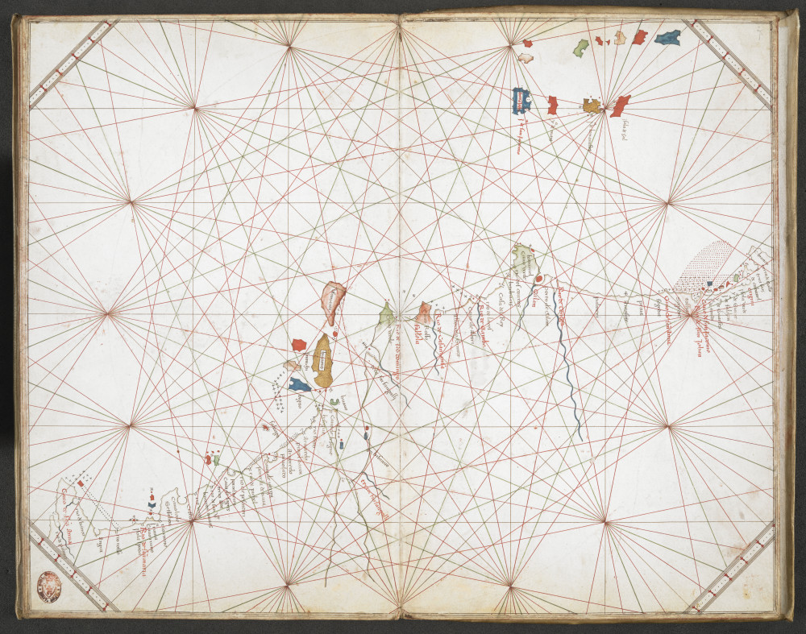
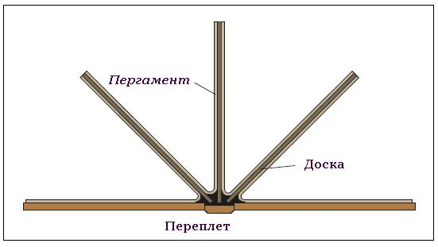
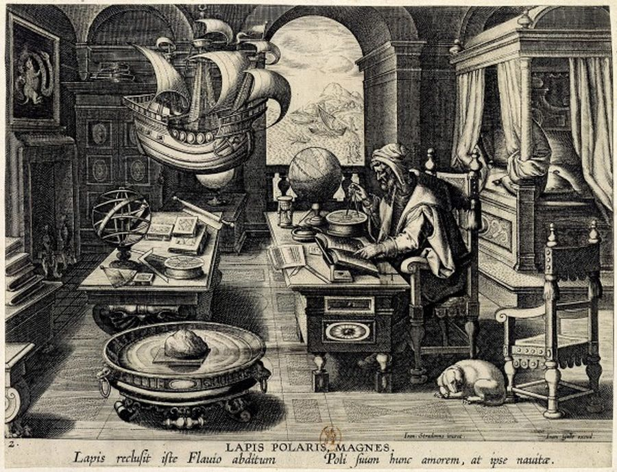
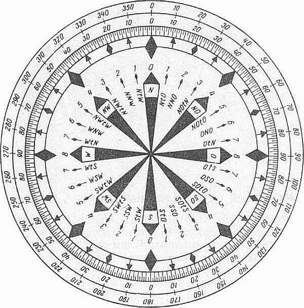
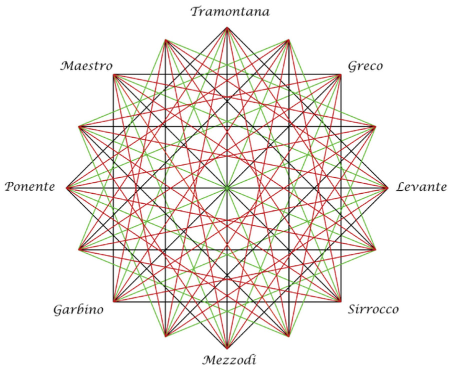
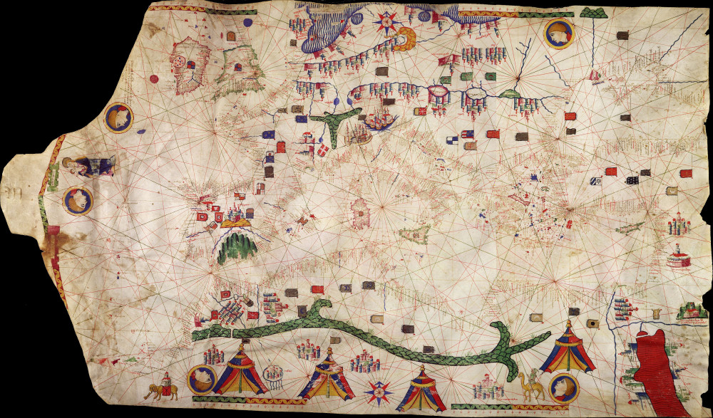
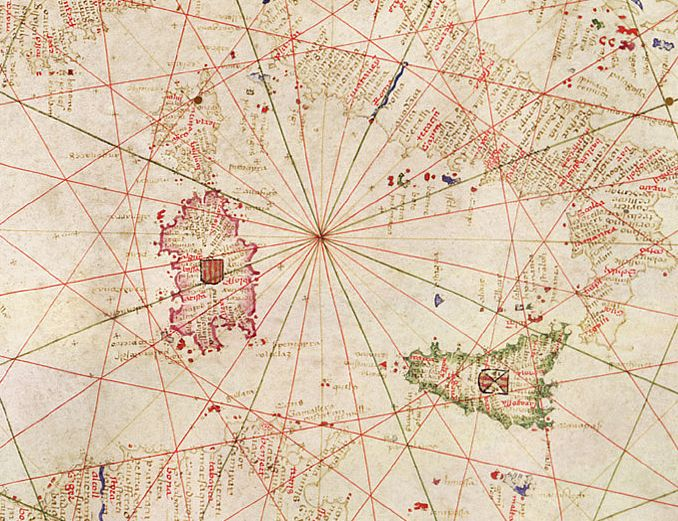
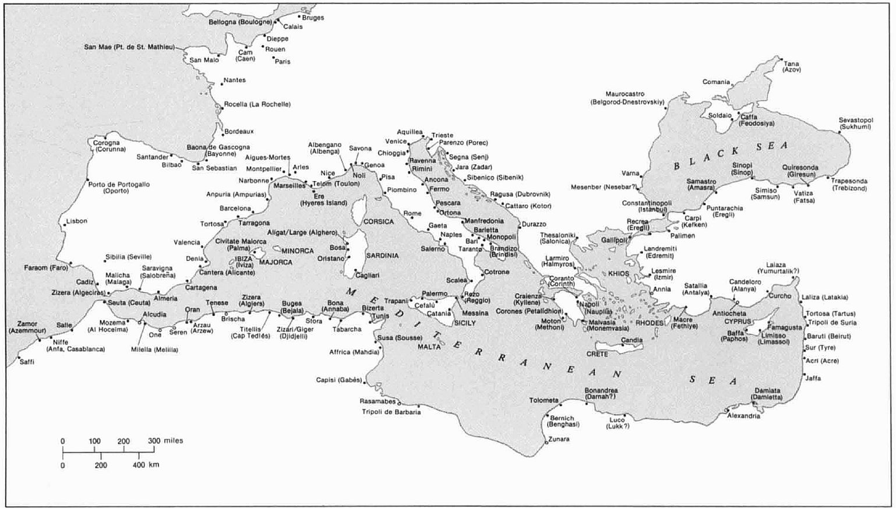
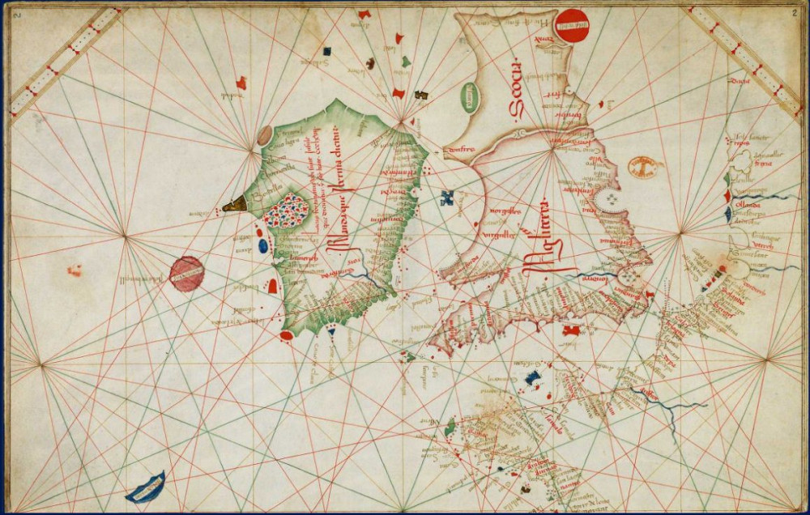
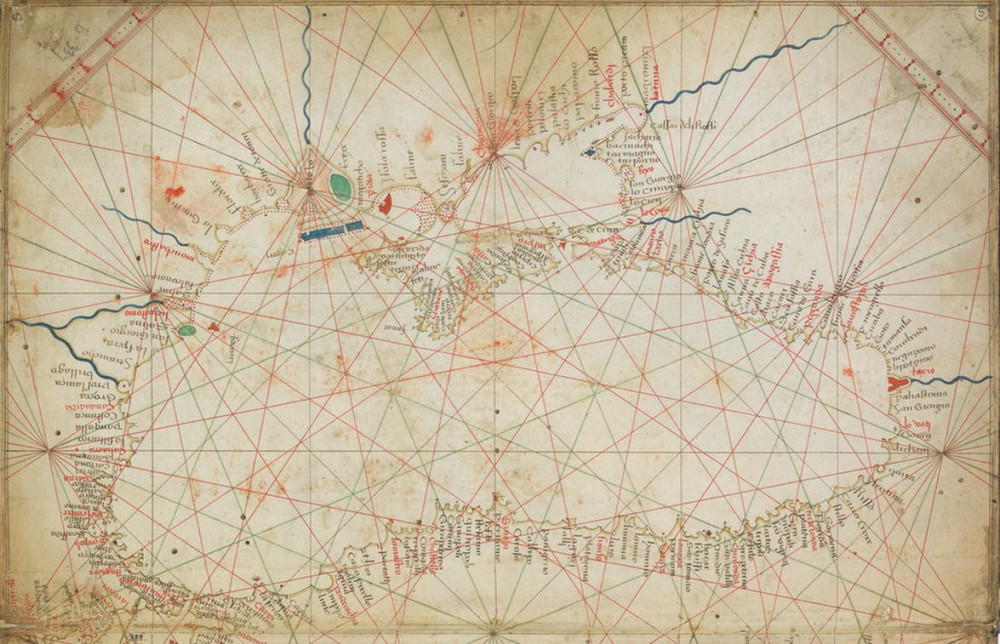

Портолан-карты: основные характеристики
He does obey every point of the letter that I dropped to betray him. He does smile his face into more lines than is in the new map with the augmentation of the Indies
Он точка в точку следует письму, которое я ему нарочно подкинула, и так улыбается, что теперь на его физиономии больше борозд, чем на новой карте с добавлением Индий.
Уильям Шекспир. Двенадцатая ночь, или что угодно (пер. Э.Л. Линецкой)
После краткого знакомства с историей портолан-карт и исторического обзора из книги Лео Багрова обратимся к основным характеристикам, которые были свойственны этому виду морских карт

Портолан-карта побережья Западной Африки (1473). Автор – Грациозо Бенинказа (Grazioso Benincasa, 1420-1482?), итальянский картограф. British Library, Egerton Ms. 2855, ff.6v-7
Практически всегда портолан-карты рисовали чернилами по пергаменту, изготовленному, как правило, из шкуры одного животного (теленка, барана или козы; ослиные шкуры на портоланы не пускали). Линия позвоночника имела ориентацию с востока на запад. Лишь для очень больших карт брали две шкуры, склеенные вместе. Изображение наносили на мездровую часть пергамента (противоположную шерсти), которая была более белой и гладкой. Известны лишь два случая (на протяжении XIV–начала XVI вв.), когда портолан-карты исполнялись на бумаге: атлас из пяти листов, исполненный венецианским картографом Giacomo Giroldi, и анонимная карта Каспийского моря 1525 г. с острова Лесина (Хвар). В нерабочем состоянии карта скручивалась в рулон и перевязывалась кожаным ремешком, который крепился в районе «шеи»; таким образом, карта сворачивалась, начиная с широкой ее части и завершая «шеей». Если, конечно, листы карт не переплетались в один атлас.
В этом случае для прочности и предотвращения съеживания, подобно шагреневой коже, листы пергамента крепились на доски или картон.

Атлас карт-портоланов
Ориентация «шеи» пергамента – на восток или на запад – строго не устанавливалась. У Пизанской карты (конец XIII века), как мы помним, «шея» была обращена на восток. Такую же ориентацию имела и бóльшая часть других карт той эпохи. Но в XV веке картина изменилась, и значительная часть карт-портоланов имела уже противоположную ориентацию. Имеется мнение (Kelly, 1977), что такое изменение стало следствием переноса активности в морской торговле, а следовательно, и в мореплавании, с востока на запад. Если пользователь больше путешествовал, например, по восточному Средиземноморью, то ему удобнее было иметь именно эту часть карты у «шеи», чтобы каждый раз не разматывать всю карту полностью. Однако абсолютно строгого подтверждения этого правила на практике нет.
Даже спустя век после изобретения книгопечатания практически все морские карты рисовали от руки. Пожалуй, единственным исключением были отдельные карты Грациозо Бенинказа, который исполнял некоторые элементы вручную по предварительно сделанным печатным оттискам основных контурных линий карты (см. рис. в начале поста).
Типовой набор картографа, работающего с портулан-картами, включал: черные, красные и зеленые чернила, гусиные перья, очень острый перочинный нож, стили (острые палочки), свинцовый карандаш и несколько линеек с прямыми кромками. Кроме того, картограф имел пару циркулей (назывались они ‘sestes’ или ‘compasso’; морской компас, как мы увидим позже, в то время называли ‘bussola’).

Космограф в рабочем кабинете. ГравюраPhilippe Galle (1537-1612), Национальная библиотека Франции.
Обратимся теперь к изображению на карте. Еще раз подчеркнем, что методы, которые были положены в основу построения портолан-карт – плод современных размышлений. Нам до сих пор ничего не известно о том, какие теоретические основы и почему были использованы создателями этих удивительных карт.
Первое, что бросается в глаза – это паутина румбовых линий. Их так много, что даже Шекспир не удержался и использовал этот образ в своей «Двенадцатой ночи», вложив в уста служанки Марии слова, приведенные в эпиграфе к данному посту.
Мы еще не забыли, как румбовые линии определил Л.Багров: «линии, выходящие радиально из центра в направлениях ветров или румбов компаса». Еще более кратко дал определение румбовой линии в свое словаре Бутаков: «Румб на карте».
На первый взгляд румбовые линии расположены совершенно хаотично, однако при ближайшем рассмотрении можно обнаружить гармонию в этом расположении. Одна или две соприкасающиеся вспомогательные окружности, едва намеченные тонкими линиями (их называли circulo oculto – невидимые окружности) занимают практически все пространство карты. Вспомогательную окружность процарапывали на пергаменте циркулем или чертили свинцовым карандашом, который потом стирали.
Из центра circulo oculto (или из центров, если окружностей было две) через каждые 45° проводили тонкие черные линии, образующие четыре направления: север-юг, восток-запад, северо-восток – юго-запад, северо-запад – юго-восток. (Мы говорим черные, но на некоторых картах видим коричневые или красно-коричневые линии. Это объясняется тем, что для черного цвета использовались железо-галловые чернила, цвет которых на самом деле был скорее коричневым и во многом зависел от состава и обработки используемых для их изготовления чернильных орешков.) Эти черные румбовые линии обозначали восемь главных направлений или «ветров». Мы о них поговорим подробнее позже, когда речь будет идти о розе ветров. Но сейчас хочу отметить некоторую особенность в терминологии, связанную с румбовыми линиями.
В русской литературе, относящейся к морской навигации, румбом называют (1) направление к точкам видимого горизонта относительно стран света или угол между двумя такими направлениям или (2) деление на картушке компаса, соответствующее 1/32 части окружности горизонта, так что один румб соответствует 11°15'.

Компасная роза
Каждому из 32 направлений присваиваются собственные наименования: направления N (норд), О (ост), S (зюйд) и W (вест) называют главными румбами (при этом направления N и S также называются нулевыми, так как от них ведется отсчет всех румбов); средние направления между главными румбами NO, SO, SW и NW называются четвертными румбами; средние направления между главным и четвертными румбами называются трёхбуквенными румбами — NNО, ONO и т. д. Средние направления между каждыми двумя из шестнадцати получившихся таким образом румбов образуются из названий соответствующих главных и четвертных румбов с добавлением между ними буквы t (от голл. ten, предлог направления к ) — NtO, NOtO, OtN и т. д. Их иногда называют промежуточными. Для более точного указания направлений румбы иногда делились на четыре и даже на восемь частей, а наименования этих дробных румбов давались исходя из наименований основных румбов в направлении к О и W: NO ¼ O; SWtW ¼ W и т. п Но для интересующей нас эпохи это не актуально.
У англичан картина с терминами несколько иная. N (north), E (east), S (south) и W (west) у них называют базовыми ("basic winds") или, чаще, это cardinal points или cardinal directions. Главные (main или chief, или, чаще, principal winds), это четыре базовых направления плюс четыре промежуточных ("intercardinal" или ordinal directions – NE, SE, SW и NW), которые в русской терминологии, как мы уже знаем, называются четвертными. Те направления, (которые у нас называются трехбуквенными), которые получаются делением пополам углов межу главными, англичане называют половинными (half-winds). Если же разделить пополам углы между английскими половинными направлениями, то мы получим английские четвертные (quarter-winds), которые никак нельзя путать с четвертными румбами в русской терминологии. Вместо голландского предлога ten англичане, естественно, использую свой предлог by, и в названиях румбов ставят вместо буквы t букву b.
И еще одна особенность. Обозначение основных географических азимутов в виде звезды с количеством лучей, кратным четырем, называют обычно розой ветров. При количестве лучей, равном 32, ее называют также компасной розой или розой румбов. Но здесь есть одна терминологическая тонкость. Когда мы говорим о розе ветров, то имеем в виду некоторые сектора, в которых дует ветер; если же речь идет о компасной розе, то здесь подразумеваются совершенно четкие направления: directions или points. Впрочем, я думаю, мы посвятим розе ветров отдельный пост.
Сказанного выше достаточно, чтобы описать названия всех 32 румбов, которые приняты сегодня, и учитывать различия в русской и английской терминологии. Слегка запутанно, но постепенно привыкаешь. А сейчас вернемся к построению румбовых линий на портолан-картах. Придерживаться будем английского варианта терминологии, больше подходящего к исторически текстам.
Итак, мы остановились на том, что на портолан-карте проведены черные румбовые линии, обозначающие восемь главных направлений или «ветров»: четыре кардинальных направления плюс четыре других, входящих в группу из восьми главных направлений. Типовые названия этих ветров на типовых портолан-картах (начиная с севера по часовой стрелке) : Tramontane, Gregale, Levante, Sirocco, Ostro, Libeccio, Ponente, и Mistral. Естественно, имели место вариации этих названий. ostro иногда заменяли на mezzodi или mezzo lorno. Garbino заменяли на Libeccio и т.д.
После этого зеленым цветом проводят восемь направлений половинных ветров.

Роза ветров с 8 главными ветрами (черный цвет), 8 половинными ветрами (зеленый цвет) и 16 четвертными ветрами (красный цвет).
Отметим точки, в которых каждый главный ветер пересекает вспомогательную («невидимую») окружность. С помощью циркуля разделим дуги между этими точками пополам и полученные новые точки соединим с главным центром линиями зеленого цвета. Получим «половинные ветры». Таким образом, мы получили 16 исходящих из основного центра на равных угловых расстояниях друг от друга лучей. Но создателю портолан-карт этого мало, он должен получить более точную навигацию, поэтому намерен иметь 32 направления, т.е. изобразить еще и направления четвертных ветров. Дальше делить центральный угол при главном центре на первых портолан-картах считали нецелесообразным, так как плотность линий в этом месте станет очень высокой и это сильно загромоздит чертеж и затруднит работу с картой. Поэтому создатели карт-портоланов шли другим путем. Они соединяют каждый вторичный центр, расположенный на вспомогательной окружности, с другими вторичными центрами. Стороны полученных таким образом вписанных углов, опирающихся на два соседних вторичных центра и равные половине соединяющей их дуги, исполняют красным цветом, так как эти линии входят в группу четвертных ветров.
Однако Petrus Roselli в 1456 году удвоил число лучей, исходящих из центра, добавив к 16-ти черным и зеленым линиям 16 красных. Три ранние карты Розелли имели по 16 лучей, исходящих из центра, однако все последующие – уже по 32.

Портолан-карта Roselli (1466)

Портолан-карта Roselli (1466). Фрагмент.
Расположение центра розы ветров на портолан-картах не привязывалось к каким-либо конкретным пунктам и обычно менялось от карты к карте. Основным условием было не допустить совмещения центра розы ветров с контуром береговой линии. Однако в случаях, когда румбовые линии наносили после изображения береговой линии, это условие не всегда соблюдалось.
Как все эти румбовые линии использовались в практической навигации мы рассмотрим в отдельной главе.
Береговую линию на портолан-картах рисовали черным цветом. Названия портов, заметных мысов и заливов писали под прямым углом к береговой линии на стороне суши. Названия наиболее важных городов и заливов исполняли красными чернилами, остальные названия – черными.

Названия наиболее важных мест, которые обычно на портолан-картах XIV-XV вв. писали красными чернилами. Современные названия даны в скобках. (Т.Кэмпбелл)
Топонимы на прибрежных островах писали в противоположном направлении к топонимам на материке. Чтобы яснее распознавать острова и отличать их от прилегающей суши они обычно подкрашивались различными цветами.

Фрагмент портолан-карты Grazioso Benincasa, 1467 г.
Такой же прием использовали для выделения дельты рек. Особенно это касалось Роны, Дуная и Нила. Сами устья изображали парой коротких параллельных линий. Кроме того, выступающие в море участки суши и острова изображались в большем размере, чем остальные территории. Промежутки между мысами изображали правильными дугами окружности, обращенными выпуклой частью к суше, отдавая тем самым предпочтение скорее эстетике, чем гидрографии. Сами мысы имели одну из трех форм: заостренную, закругленную или клинообразную. Особенно заметной тенденция к упрощению изображения береговой линии становилась по мере удаления от Средиземного моря в Атлантику или на Балтику.
Таким образом,создатели портолан-карт были больше обеспокоены не географической точностью их работы, а точностью изображения положения мысов, которые надо обходить и устьев рек, в которых пополняли запасы пресной воды и через которые получали доступ к внутренним территориям континента. Именно удивительная точность в размещении этих объектов так поражает в портолан-картах. Границы между государствами не изображались, но административные центры отмечались флагами правителей. Однако неправильным было бы использовать размещение этих флагов для датировки карт, так как картографы-христиане заблаговременно размещали христианские флаги на мусульманских территориях, которые еще только предстояло захватить, и не спешили убирать их с земель, уже захваченных мусульманами.
Портолан-карты не имели какой-либо приоритетной ориентации. У них не было обозначенного верха или низа. Пользователь должен был вращать карту, чтобы читать названия географических пунктов. Даже декоративные элементы не имели, как правило, определенной ориентации.
После того, как на карту были нанесены румбовые линии, контуры береговой линии и названия объектов, работа картографа уступала место работе художника. Наносились детали на сухопутных участках и элементы декоративного украшения карты. На этом этапе проявлялись различия между двумя стилями портолан-карт: итальянским и каталанским (принадлежность карты к тому или иному стилю не означала вовсе, что кары итальянского стиля были созданы в Италии и наоборот). На картах итальянского стиля в лучшем случае изображали часть Дуная, в остальном внутренние участки континента оставались пустыми. На этих картах вообще избегали изображать любые объекты, в которых не было функциональной необходимости. Напротив, реки, горы, множество декоративных элементов указывают на то, что перед нами карта каталанского стиля. При этом использовалось много стилизованных условностей. Реки, пересекающие континент, часто изображали в форме штопора, берущего начало в озерах миндалевидной формы.

Фрагмент карты из атласа Benincasa Grazioso.
Горные цепи имели причудливые формы. Самая большая из них Атласская, изображалась в форме птичьей лапы с двумя, а в дальнейшем с тремя когтями на восточном конце (см. например, приведенную выше карту Roselli (1466 г.)
Красное море окрашивали в красный цвет.
Существовали также портолан-карты, которые демонстрировали смешение стилей.
Портолан-карты были первыми морскими картами, на которых был помещен масштаб, обычно в местной разновидности морских миль. Конечно, масштаб можно было определить, если постараться, еще на Птолемеевых картах, анализируя сетку параллелей и меридианов, но регулярно размещать масштаб стали именно на портолан-картах. Кстати, первой, начиная с Римской империи, европейской сухопутной локальной картой, исполненной в определенном масштабе, стал план Вены 1422 года.
Масштаб менялся от одной портолан-карте к другой. В грубом приближении размер карты в среднем был 65х100 см, а масштаб в среднем 1:6 000 000.
Как мы уже отмечали, на первых портолан-картах не было указаний на широту и долготу, первое указание на широту появляется в начале XVI века. Шкала масштаба обычно размещалась вдоль полей карты или в другом месте, где она не мешала использовать карту по назначению. Шкала имела стандартную форму и для большиства портолан-карт состояла из прямоугольных секций по 50 миль, , каждая из которых была разбита на пять частей по 10 миль, чередующихся с белыми секциями.
Впрочем, наш пост приобретает угрожающие размеры, поэтому про масштабы на портолан-картах поговорим в другой раз.